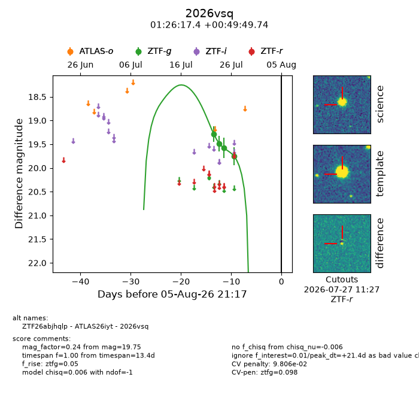
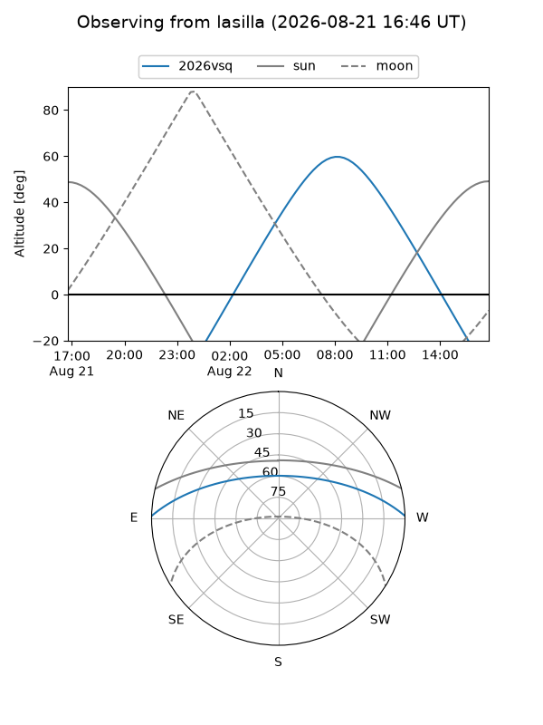
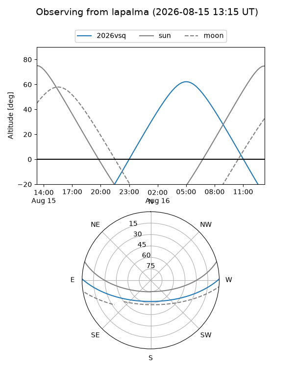
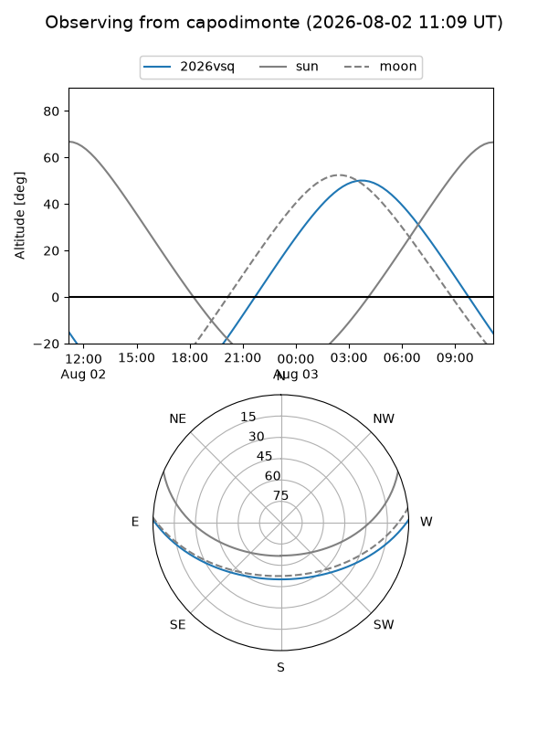
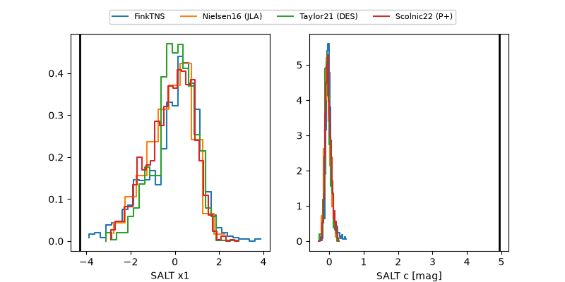

2026vsq
Target 2026vsq at 2026-08-05 21:19
Aliases and brokers:
FINK-ZTF: ztf.fink-portal.org/ZTF26abjhqlp
Lasair-ZTF: lasair-ztf.lsst.ac.uk/objects/ZTF26abjhqlp
ALeRCE-ZTF: alerce.online/object/ZTF26abjhqlp
YSE-PZ: ziggy.ucolick.org/yse/transient_detail/2026vsq
TNS name: wis-tns.org/object/2026vsq
Direct TNS query: direct search
alt names
ZTF26abjhqlp (ztf,fink_ztf)
2026vsq (tns,yse)
ATLAS26iyt (atlas)
Coordinates:
equatorial (ra, dec) = 21.5727,+0.83048
equatorial (HMS+DMS) = 01:26:17.45,+00:49:49.74
galactic (l, b) = (141.0268,-60.81094)
Flags:
TNS type: nan
peak dt: +21.4
likely cv: !!
Photometry:
last ztfg=19.75
4 ztfg detections
Lightcurve

Visibility



Additional plots
